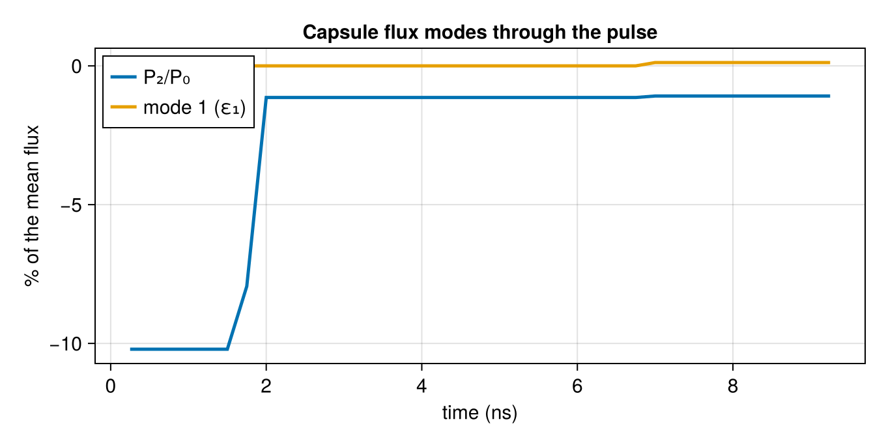

From drive asymmetry to implosion metrics
Briareus computes the x-ray flux on the capsule. What NIF measures is the implosion: the hot spot's velocity from the Doppler shift of its neutrons (nToF), its shape in x-ray and neutron images, and the yield. Published transfer functions connect the two for the low modes. This tutorial uses them through a thin layer of reduced models:
- the flux's mode 1 as a hot-spot velocity (
hotspot_velocity), statically or weighted over adrive_historywith a Green's function (ResponseKernel); - the piston model's yield factors (
implosion_metrics,mode1_tolerance); - P2 swing metrics over a pulse (
swing_metrics); - beam errors as a velocity budget (
velocity_uncertainty), the inverse from a measured velocity (infer_errors), and a velocity penalty for objectives (VelocityPenalty).
Each model is a published fit for particular NIF platforms. The sensitivities are engineering defaults that you should replace with your design's numbers. Sources and confidence are in reference/research-notes.md ("Implosion metrics").
using Briareus
using CairoMakie
using LinearAlgebra
using Printf
using Random
CairoMakie.activate!(type = "png", px_per_unit = 2)
set_theme!(fontsize = 15, linewidth = 2.5)The hohlraum
The hohlraum and pointing of the Pointing and power errors tutorial, on a coarser mesh: 10.1 × 5.75 mm, 3.1 mm entrance holes, a 0.9 mm capsule, and 48 quads at 8 TW.
target = hohlraum(length = 10.1, radius = 2.875, leh_radius = 1.55, capsule_radius = 0.9,
wall = gold(albedo = 0.85, conversion = 0.8), h = 0.6, capsule_h = 0.2)
p = GroupPointing(nif_quads(power = 8.0); fields = (:z, :r))
published = Dict(:outer50 => (5.01, 0.0), :outer44 => (5.20, 0.0),
:inner30 => (3.63, -0.60), :inner23 => (3.09, -1.09))
quads = apply(p, reduce(vcat, [[published[k]...] for k in p.keys]))
scenario = Scenario(target, quads; observe = :capsule, parameterization = p,
viewfactor_kw = (; closed = true))
@printf("%d elements, %d quads\n", nelements(target), length(quads))1332 elements, 48 quadsMode 1 as a hot-spot velocity
A dipole drive $1 + \varepsilon\cos\gamma$ pushes the shell harder on its bright side, so the hot spot moves away from it (Casey et al., PRL 126, 025002, 2021). The published sensitivity is about 100 km/s per percent of $\varepsilon$ over the rise and peak. Young et al. (Phys. Plasmas 27, 082702, 2020) found 0.44 % of rise-and-peak mode 1 on N170601. They predicted 44.7 km/s from view factors and their Green's function, while 3D HYDRA gave 37.6 km/s. Kritcher et al. (2024) put about 0.7 % on N230729, for 70–75 km/s without burn. hotspot_velocity uses HOTSPOT_VELOCITY_PER_PERCENT = 100 km/s per % by default. Its input is mode1_vector, $\sqrt3\,(c_{11}, c_{1,-1}, c_{10})/c_{00}$, whose norm is mode_amplitude(c, 1) (the $\varepsilon$ of the papers). We test it on a sphere lit with a known dipole:
sphere = Target(Component(:s, icosphere_mesh(1.0; n = 8), gold()))
W = ylm_weights(sphere, 1:nelements(sphere); lmax = 1)
n̂ = normalize([0.3, -0.5, 0.8])
dipole(ε) = W * [1 + ε * dot(n̂, normalize(sphere.elem_centroid[e])) for e in 1:nelements(sphere)]
for (case, ε, published_v) in (("Young N170601", 0.0044, "37.6 (3D HYDRA), 44.7 (VF + G)"),
("Kritcher N230729", 0.007, "70–75 (burn-off)"),
("Spears 2014, peak", 0.02, "120 (saturated)"))
v = hotspot_velocity(dipole(ε))
@printf("%-18s %.2f%%: %5.1f km/s, direction · n̂ = %+.4f; published %s\n", case,
100ε, norm(v), dot(normalize(v), n̂), published_v)
endYoung N170601 0.44%: 44.0 km/s, direction · n̂ = -1.0000; published 37.6 (3D HYDRA), 44.7 (VF + G)
Kritcher N230729 0.70%: 69.9 km/s, direction · n̂ = -1.0000; published 70–75 (burn-off)
Spears 2014, peak 2.00%: 199.8 km/s, direction · n̂ = -1.0000; published 120 (saturated)The first two land within the published ranges. Spears et al. (Phys. Plasmas 21, 042702, 2014) applied 2 % in 2D and got 120 km/s. The linear rule gives 200 km/s there, beyond its range: Young found the response linear only below about 0.75 %. Treat velocities above ~80 km/s from this rule as upper bounds.
A dropped quad and a displaced target
Losing one quad's power leaves a mode 1 of a few percent, past the linear range, but the comparison between cones still holds. Young et al. found that a dropped inner quad gives about twice the velocity of a dropped outer one on N170827:
for g in (:inner23, :inner30, :outer44, :outer50)
vs = [norm(hotspot_velocity(evaluate(scenario, [j == i ? remake(b; power = 0.0) : b
for (j, b) in enumerate(quads)])))
for (i, q) in enumerate(quads) if q.group === g]
@printf("%-8s quad dropped: %4.0f km/s (%.1f%% mode 1)\n", g, sum(vs) / length(vs),
sum(vs) / length(vs) / 100)
endinner23 quad dropped: 190 km/s (1.9% mode 1)
inner30 quad dropped: 217 km/s (2.2% mode 1)
outer44 quad dropped: 150 km/s (1.5% mode 1)
outer50 quad dropped: 139 km/s (1.4% mode 1)Here the inner quads give 1.3–1.6 times the outer quads' velocity, not 2. That is this hohlraum, not the model: on Young's own setup (N170827's static model, an 11.3 × 5.27 mm hohlraum with radii at 85 %, albedo 0.8, its requested pulses and its digitized Green's function young2020_kernel) Briareus gives 336, 349, 161 and 152 km/s for the four cones against Young's 317, 337, 170 and 146, a ratio of 2.2 against 2.07 (test suite; research notes, "Young 2020 validation"). The same paper gives the sensitivity to a whole-target offset from chamber center: 1.3 km/s per µm vertical and 0.1 km/s per µm horizontal. The positioning error of mode_uncertainty, carried to a velocity, gives the same derivative:
for (axis, d) in (("vertical (z)", (0.0, 0.0, 1.0)), ("horizontal (x)", (1.0, 0.0, 0.0)),
("horizontal (y)", (0.0, 1.0, 0.0)))
u = velocity_uncertainty(scenario, quads; pointing = 0.0, positioning = d)
@printf("target offset %-15s %.2f km/s per µm\n", axis, u.rms / 1000)
endtarget offset vertical (z) 0.99 km/s per µm
target offset horizontal (x) 0.60 km/s per µm
target offset horizontal (y) 0.61 km/s per µmThe vertical number is within 25 % of Young's; the horizontal ones are six times larger. A horizontal offset moves the inner and outer footprints so that their mode 1 opposes, and how well they cancel depends on the hohlraum and pointing: on Young's N170827 setup Briareus gets 0.09 and 1.30 km/s per µm (Young 0.1 and 1.3), and 0.10 and 1.07 for the capsule moved inside the hohlraum (Young 0.1 and 1.1). Check your own platform's derivative before you use it in a tolerance.
The piston model
Hurricane et al. (Phys. Plasmas 27, 062704, 2020) treat mode 1 as two pistons of unequal areal density. The hot spot's velocity over the implosion velocity, $f = v_{HS}/v_{imp}$, is also the shell's ρR asymmetry. They give:
- the residual kinetic energy $\mathrm{RKE} = c f^2\,\mathrm{KE}$, with $c \approx 0.66$;
- the no-α yield factor $(1-f^2)^a$, with $a = 3.3$;
- an α-heating factor $\exp(-(a-1)\chi^{1.2} f^2)$, where $\chi$ is the 1D generalized Lawson parameter.
Their Table I lists the f and $v_{HS}$ allowed for 5–20 % yield loss at $v_{imp} = 380$ km/s, "near ignition" ($\chi \approx 1$–2). mode1_tolerance inverts the loss. At $\chi = 2$ it reproduces the table:
println("ΔY/Y f (Table I) v_HS (Table I)")
for (loss, f, v) in ((0.05, 0.08, 30), (0.10, 0.11, 40), (0.15, 0.14, 50), (0.20, 0.16, 60))
tol = mode1_tolerance(loss; vimp = 380, chi = 2.0)
@printf("%.2f %.3f (%.2f) %4.1f km/s (%d)\n", loss, tol.f, f, tol.velocity, v)
endΔY/Y f (Table I) v_HS (Table I)
0.05 0.077 (0.08) 29.4 km/s (30)
0.10 0.111 (0.11) 42.0 km/s (40)
0.15 0.137 (0.14) 52.2 km/s (50)
0.20 0.161 (0.16) 61.1 km/s (60)At $\chi = 1.5$ the 5 % row would allow f = 0.09. The table's $\chi$ is about 2. implosion_metrics collects the factors for one velocity:
m = implosion_metrics([0.0, 0.0, 75.0]; vimp = 380, chi = 1.0)
@printf("75 km/s: f = %.3f, RKE/KE = %.3f, no-α yield ×%.3f, α ×%.3f, total ×%.3f\n",
m.f, m.rke_fraction, m.yield_factor, m.alpha_factor, m.total)75 km/s: f = 0.197, RKE/KE = 0.026, no-α yield ×0.877, α ×0.914, total ×0.802α heating also amplifies the measured velocity. Nora et al. (Phys. Plasmas 30, 092705, 2023) fit this as burn_amplification(Yamp), about 1.8 at ``Y{amp} = 30$(their Table IV divides N210808's measured speed by 1.75). Kritcher et al.'s burn-on/burn-off simulations give 1.27–1.39 for the 2022–23 shots, so the fit is best read as an upper estimate. The stagnated shape changes it too: [`shape_amplification`](@ref)(P2, θ) is Nora's 3D table, about 0.8–1.2 for$|P_2| < 0.4`. Pass their product asamplification` when you compare with an nToF measurement.
The errors' velocity budget
velocity_uncertainty carries mode_uncertainty to the hot-spot velocity: its 3 × 3 covariance, its rms by error source, and the expected yield factor over the errors. For NIF's 50 µm pointing, 3 % power imbalance, and 30 µm target positioning:
ub = velocity_uncertainty(scenario, quads; pointing = 0.05, power = 0.03, positioning = 0.03,
vimp = 380, chi = 1.0)
@printf("velocity rms %.0f km/s (beams %.0f, positioning %.0f); per axis %s km/s\n", ub.rms,
ub.rms_by.beam, ub.rms_by.positioning, join((@sprintf("%.0f", x) for x in ub.sigma), ", "))
@printf("expected yield factor: no α %.3f, with α (χ = 1) %.3f\n", ub.expected_yield, ub.expected_total)velocity rms 53 km/s (beams 48, positioning 23); per axis 27, 27, 38 km/s
expected yield factor: no α 0.939, with α (χ = 1) 0.900MacGowan et al. (HEDP 40, 100944, 2021) found each source to be about 0.5 % of mode 1 (~50 km/s), and the sources together up to 100 km/s. The expectation uses $(1-f^2)^a \approx e^{-a f^2}$, whose Gaussian average has a closed form. A Monte Carlo of full evaluations checks it (the test suite does the same at a smaller $v_{imp}$, where the factor is far from 1):
samples = sample_modes(scenario, quads; pointing = 0.05, power = 0.03, positioning = 0.03,
n = 200, lmax = 1, rng = MersenneTwister(1))
vmc = [hotspot_velocity(samples[:, k]) for k in axes(samples, 2)]
@printf("Monte Carlo: velocity rms %.0f km/s, mean yield factor %.3f (exact (1 − f²)^3.3: %.3f)\n",
sqrt(sum(v -> sum(abs2, v), vmc) / length(vmc)),
sum(v -> exp(-3.3 * sum(abs2, v) / 380^2), vmc) / length(vmc),
sum(v -> yield_factor(norm(v) / 380), vmc) / length(vmc))Monte Carlo: velocity rms 53 km/s, mean yield factor 0.939 (exact (1 − f²)^3.3: 0.938)Weighting the drive over the pulse
The static rule weights mode 1 equally at all times. Young et al. instead convolved the mode-1 history with a Green's function $G_1(t)$ (km/s per % per ns) computed for their platform: $v = -\int G_1(t)\,100\,\vec p_1(t)\,dt$. Their $G_1$ is negative in the foot and dominated by the rise and peak. They printed it only as a figure, so Briareus ships no $G_1$. The default is flat_kernel: a flat weight over a window that gives 100 km/s for a constant 1 %.
A pulse with a picket, a foot, and a peak. Each inner quad carries 0.8 of the nominal quad power in the picket and 0.3 after it; each outer quad carries 1.2 and then 1.7. In this hohlraum, equal quad powers drive the waist hot (P2/P0 ≈ −14 %), and the peak's split brings P2 near −1 %. One inner quad loses a quarter of its power at 7 ns, during the peak:
pulse_times = [0.0, 0.5, 1.5, 2.0, 5.0, 6.5, 9.0, 9.5]
pulse(picket, rest) = PulseShape(pulse_times, [1.5picket, 2.0picket, 2.0picket,
0.6rest, 0.6rest, 8.0rest, 8.0rest, 4.0rest])
pulses = Dict(:inner23 => pulse(0.8, 0.3), :inner30 => pulse(0.8, 0.3),
:outer44 => pulse(1.2, 1.7), :outer50 => pulse(1.2, 1.7))
lost = quads[3].name
beams_at(t) = [b.name == lost && t >= 7.0 ? remake(b; power = 0.75b.power) : b
for b in with_pulses(quads, pulses, t)]
times = collect(0.25:0.25:9.25)
hist = drive_history(scenario.model, scenario.deposition, beams_at, times; ylm = true, lmax = 4)
p1 = [norm(mode1_vector(hist.ylm[:, k])) for k in eachindex(hist.time)]
P2 = hist.moments[3, :] ./ hist.moments[1, :]
fig = Figure(size = (680, 340))
ax = Axis(fig[1, 1], xlabel = "time (ns)", ylabel = "% of the mean flux",
title = "Capsule flux modes through the pulse")
lines!(ax, hist.time, 100 .* P2; label = "P₂/P₀")
lines!(ax, hist.time, 100 .* p1; label = "mode 1 (ε₁)")
axislegend(ax; position = :lt)
fig
With the flat kernel over the rise and peak (5–9.25 ns), the power lost at 7 ns counts for the part of the window it covers. An illustrative kernel that is negative in the foot, like Young's, changes nothing here, because the foot has no mode 1. The kernel's table below is invented for illustration, not Young's:
v_flat = hotspot_velocity(hist; window = (5.0, 9.25))
young_like = ResponseKernel([0.0, 4.5, 4.5, 6.0, 9.25], [-3.0, -3.0, 5.0, 40.0, 20.0])
v_kernel = hotspot_velocity(hist; kernel = young_like)
v_peak = hotspot_velocity(evaluate(scenario, beams_at(8.0)))
@printf("static at 8 ns %.0f km/s; flat over 5–9.25 ns %.0f km/s; illustrative kernel %.0f km/s\n",
norm(v_peak), norm(v_flat), norm(v_kernel))static at 8 ns 12 km/s; flat over 5–9.25 ns 7 km/s; illustrative kernel 8 km/sThe same convolution, with a kernel for an observable, applies to P2. swing_metrics reports the time-averaged P2 over a window and its swing (max − min). It compares the picket's average with the 7.5 % of Milovich et al. (Phys. Plasmas 23, 032701, 2016), the early-time P2 that keeps margin loss under 10 %:
sw = swing_metrics(hist; window = (5.0, 9.25), picket = (0.25, 2.0))
@printf("P2/P0 over the rise and peak: mean %+.2f%%, swing %.2f%%; picket mean %+.2f%% (within 7.5%%: %s)\n",
100sw.mean, 100sw.swing, 100sw.picket_mean, sw.picket_ok)
whole = swing_metrics(hist)
@printf("over the whole pulse: mean %+.2f%%, swing %.2f%%, mean |P2 − mean| %.2f%%\n",
100whole.mean, 100whole.swing, 100whole.deviation)P2/P0 over the rise and peak: mean -1.11%, swing 0.05%; picket mean -9.24% (within 7.5%: false)
over the whole pulse: mean -2.70%, swing 9.12%, mean |P2 − mean| 2.55%The peak is close to round, but the picket is outside Milovich's limit. Over the whole pulse, the time average hides a swing of several percent.
Without kernels response is empty. A flux P2 history does not give a hot-spot shape in µm. Masse et al. (Phys. Plasmas 26, 2019) found that the hot spot's response changes sign before about 4.5 ns while the shell's ρR does not. The same flux history can therefore make an oblate hot spot and a prolate ρR. Pass your platform's kernels as kernels = (; hotspot = …, rhoR = …).
Reading the errors back from a measured velocity
infer_errors also takes a measured velocity (km/s). Its default measurement error is NIF's nToF: ±14 km/s in magnitude, 13° in θ, and 29° in φ (ntof_covariance). It adds a capsule-thickness mode 1 as a nuisance error, which moves the hot spot toward the thicker side at about 110 km/s per % of thickness (Casey et al. 2021), the opposite sign to flux. A synthetic shot: the target sits 40 µm low, and the shell is 0.3 % thicker toward +x:
shifted = [remake(b; aim = b.aim + [0.0, 0.0, 0.04]) for b in quads]
v_meas = hotspot_velocity(evaluate(scenario, shifted)) + 100 * 110 * [0.003, 0.0, 0.0]
r = infer_errors(scenario, quads, v_meas; pointing = 0.05, power = 0.03, positioning = 0.03,
thickness = 0.003)
@printf("measured v = (%.0f, %.0f, %.0f) km/s; χ²_ν of the nominal %.1f, against the prior spread %.2f\n",
v_meas..., r.velocity.chi2, r.velocity.chi2_prior)
@printf("inferred: thickness (%+.2f, %+.2f, %+.2f)%%, target offset z %+.0f µm\n",
(100 .* r.thickness)..., 1000r.positioning[3])
for s in r.sources[1:3]
@printf(" %-22s explains %5.1f%%\n", s.source, 100s.fraction)
endmeasured v = (33, 0, -39) km/s; χ²_ν of the nominal 4.5, against the prior spread 0.37
inferred: thickness (+0.17, -0.00, -0.14)%, target offset z +4 µm
capsule thickness explains 46.2%
positioning explains 8.5%
Q24T pointing explains 2.2%The χ²_ν of 4.5 says the nominal design does not explain the shot. Against the spread the priors allow, 0.37, the shot is unremarkable. The inverse then shares the blame by prior size. Three numbers cannot tell a thicker shell from a brighter opposite side. Here it puts about half the true thickness on x, a spurious thickness on z that stands in for the offset, and only 4 µm of the 40 µm offset. With the beams' errors known to be small (zero prior), the offset and the thickness still compete along z. The separation has to come from capsule metrology (a tighter thickness prior):
for σt in (0.003, 0.0005)
rk = infer_errors(scenario, quads, v_meas; pointing = 0.0, positioning = 0.05, thickness = σt)
@printf("beams known, thickness prior %.2f%%: thickness (%+.2f, %+.2f, %+.2f)%%, offset z %+.0f µm\n",
100σt, (100 .* rk.thickness)..., 1000rk.positioning[3])
endbeams known, thickness prior 0.30%: thickness (+0.21, -0.00, -0.19)%, offset z +15 µm
beams known, thickness prior 0.05%: thickness (+0.02, -0.00, -0.01)%, offset z +30 µmA tight prior about zero recovers 30 of the 40 µm, but it also hides the real 0.3 % thickness along x, which then shows up in the residual. The prior is centered on zero, so a measured thickness mode belongs in the nominal. Subtract its velocity, 100 * 110 * t, from the measurement before the inverse.
A velocity penalty for objectives
VelocityPenalty adds $w\,|v|^2/s^2$ to an objective. The weight on mode 1 is then its velocity, not the same weight as the other modes. With uncertainty, it also adds the errors' expected $|\delta v|^2$. It is generic in the number type, so optimize_pointing differentiates it:
penalty = VelocityPenalty(; scale = 20.0, uncertainty = (; pointing = 0.05, power = 0.03))
symmetry = asymmetry_objective(; modes = (2 => 1.0, 4 => 1.0))
objective(ev) = symmetry(ev) + penalty(ev)
ev = evaluate(scenario, quads)
@printf("objective %.4f = modes %.2e + velocity %.4f (rms %.0f km/s over 20 km/s, squared)\n",
objective(ev), symmetry(ev), penalty(ev), sqrt(penalty(ev)) * 20)objective 5.8255 = modes 4.17e-03 + velocity 5.8213 (rms 48 km/s over 20 km/s, squared)What this checks
- A dipole drive of 0.44 % gives 44 km/s, between Young et al.'s 37.6 km/s (3D HYDRA) and 44.7 km/s (view factors and Green's function) for N170601. 0.7 % gives 70 km/s against Kritcher et al.'s 70–75 km/s burn-off for N230729. The hot spot moves away from the bright side to 1e-6 in direction. Spears et al.'s saturated 120 km/s at 2 % is over-predicted (200 km/s), as the linear range requires (test suite).
mode1_toleranceat $\chi = 2$ reproduces Hurricane et al.'s Table I: f to two digits, and $v_{HS}$ within the table's 10 km/s rounding (29.4/42.0/52.2/61.1 against 30/40/50/60). Casey et al.'s $a = 6 - 1.5\ln T$ gives Hurricane's 3.3 at 6 keV (test suite).- On this hohlraum the dropped inner/outer quad ratio is 1.3–1.6 and the horizontal target offset ~0.6 km/s/µm, against Young's ~2 and 0.1 for N170827. On Young's static N170827 setup with his digitized pulses and Green's function, Briareus reproduces Fig. 10a's mode-1 histories to 0.05–0.21 % rms, the dropped-quad velocities within 6 % (ratio 2.2 against 2.07), and the four offset sensitivities (0.09/1.30 target, 0.10/1.07 capsule, against 0.1/1.3 and 0.1/1.1 km/s/µm) (test suite).
- Kernel integrals are exact for tabulated kernels against hand integration (a step kernel on steps that miss its breakpoints), and match a 2×10⁵-point midpoint rule for a function kernel. A constant drive history reproduces the static velocity to 1e-6. Swing metrics match dense sampling to 1e-6 (test suite).
- The velocity covariance matches a Monte Carlo of full evaluations to 8 %. Its closed-form expected yield factor matches the Monte Carlo mean to 3 % (5 % with α) at a $v_{imp}$ where the factor is far from 1 (test suite).
- The velocity inverse recovers a 20 µm vertical target offset from a full evaluation's velocity to 5 %, and a thickness-only shot's thickness to 1 %. The penalty's dual-number gradient matches central differences to 1e-5, and its uncertainty term equals the propagated variance to 1e-8 (test suite).
This page was generated using Literate.jl.